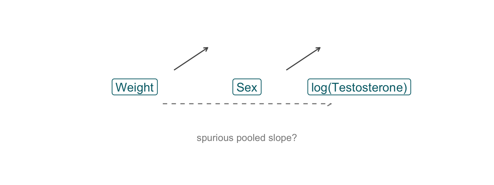
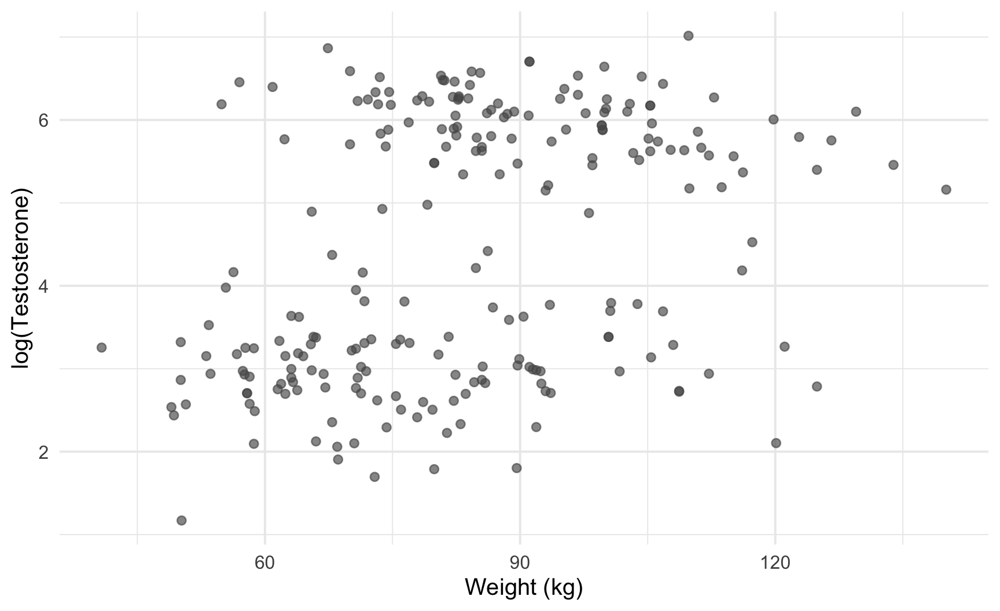
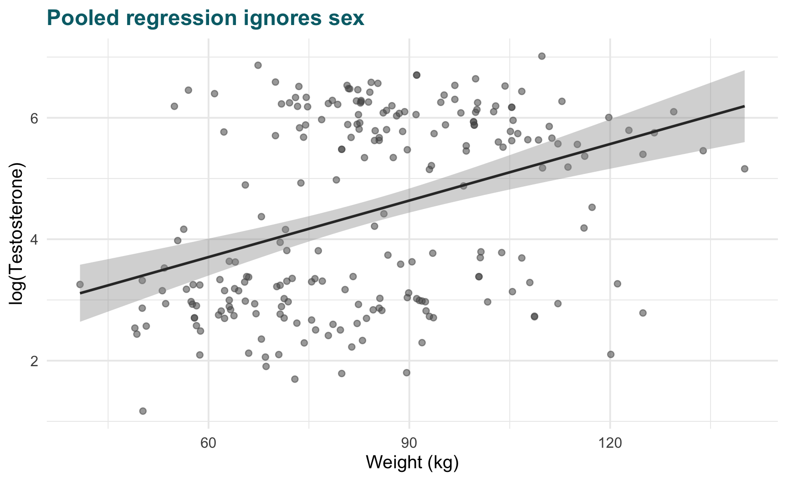
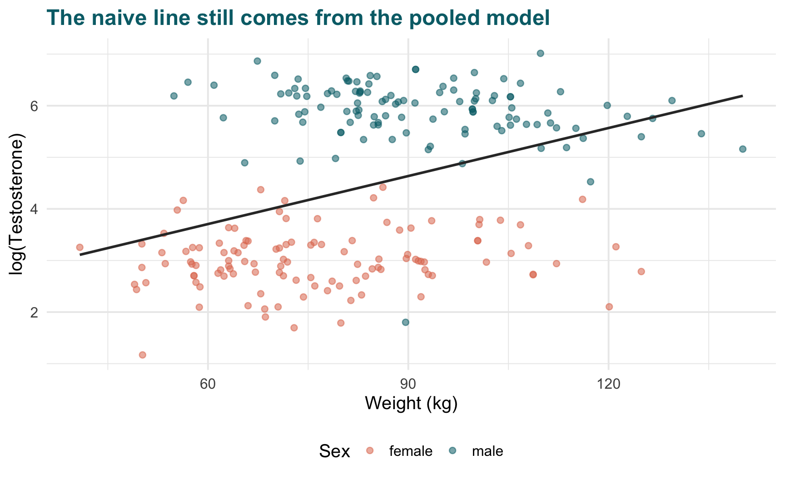
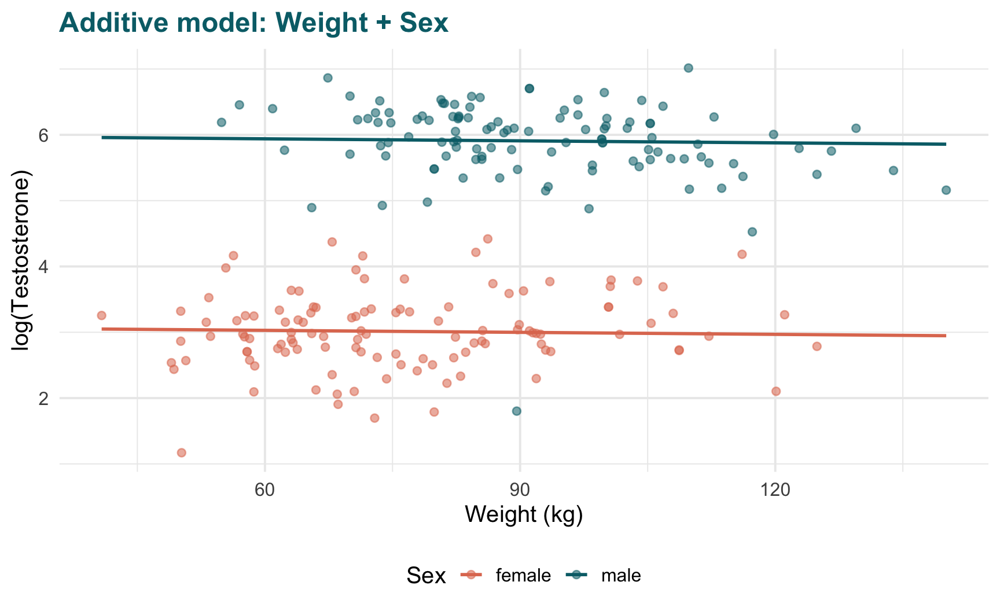
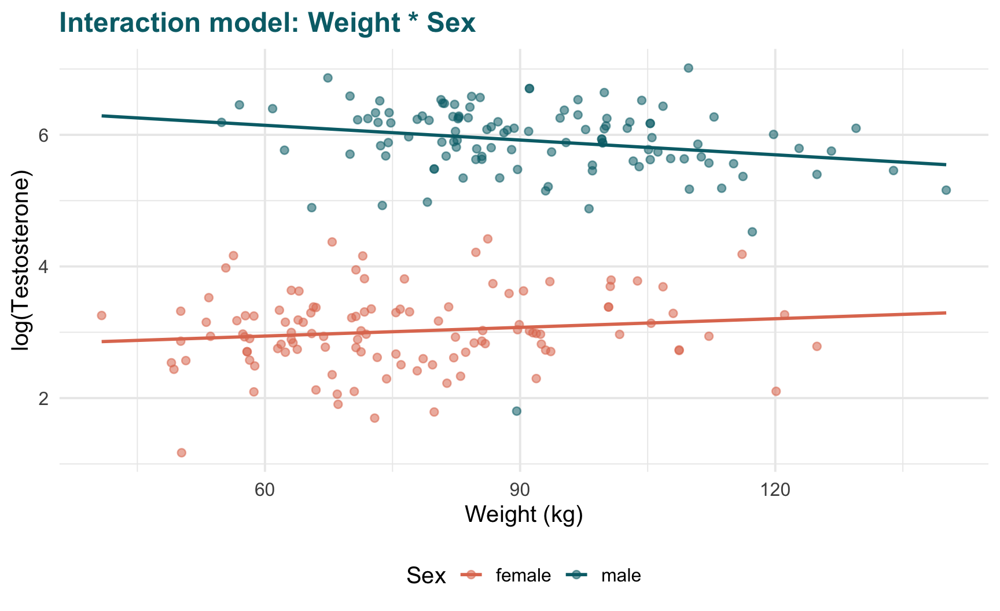
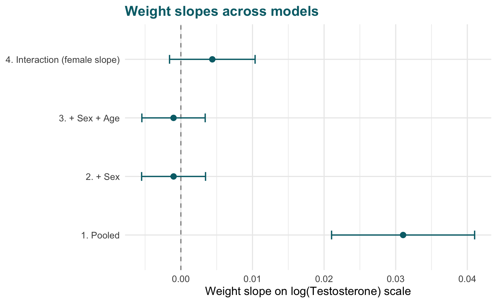

Confounding, Multiple Regression, and Interaction
Testosterone and body weight in NHANES adults
The data
We ask whether body weight is associated with testosterone in US adults.
The OpenIntro NHANES sample has lab values for 500 adults. After dropping missing testosterone, weight, sex, or age, we keep 230 complete cases.
Note
Testosterone is right-skewed, so we model log(Testosterone) rather than the raw lab value.
What is confounding?
A confounder is a third variable that:
- Is associated with the exposure (weight)
- Is associated with the outcome (log testosterone)
- Is not on the causal pathway from exposure to outcome
If we ignore it, the simple relationship we see can be misleading.
Sex is a classic confounder here: males are heavier on average and have much higher testosterone.
First look — scatter
Before fitting anything, plot the outcome against the main predictor. Points only — no lines yet.
ggplot(nhanes, aes(Weight, log_testo)) +
geom_point(alpha = 0.65, size = 2.2, color = "#555") +
labs(x = "Weight (kg)", y = "log(Testosterone)") +
theme_rsr
Does more weight go with higher or lower testosterone? The pooled cloud slopes upward.
Naive model — weight only
m_simple <- lm(log_testo ~ Weight, data = nhanes)
summary(m_simple)
Call:
lm(formula = log_testo ~ Weight, data = nhanes)
Residuals:
Min 1Q Median 3Q Max
-3.468 -1.141 -0.086 1.276 2.930
Coefficients:
Estimate Std. Error t value Pr(>|t|)
(Intercept) 1.843991 0.435905 4.230 3.38e-05 ***
Weight 0.031033 0.005069 6.122 3.99e-09 ***
---
Signif. codes: 0 '***' 0.001 '**' 0.01 '*' 0.05 '.' 0.1 ' ' 1
Residual standard error: 1.453 on 228 degrees of freedom
Multiple R-squared: 0.1412, Adjusted R-squared: 0.1374
F-statistic: 37.48 on 1 and 228 DF, p-value: 3.994e-09ggplot(nhanes, aes(Weight, log_testo)) +
geom_point(alpha = 0.55, size = 2, color = "#555") +
geom_smooth(method = "lm", se = TRUE, color = naive_col, linewidth = 1) +
labs(
x = "Weight (kg)",
y = "log(Testosterone)",
title = "Pooled regression ignores sex"
) +
theme_rsr
Each extra kg is associated with about 0.031 units on the log scale. That sounds like a real weight effect — but we have not accounted for sex.
Same plot — colour reveals the pattern
ggplot(nhanes, aes(Weight, log_testo, color = Gender)) +
geom_point(alpha = 0.55, size = 2) +
geom_smooth(
aes(group = 1),
method = "lm", se = FALSE, color = naive_col, linewidth = 1
) +
scale_color_manual(values = pal_sex) +
labs(
x = "Weight (kg)",
y = "log(Testosterone)",
color = "Sex",
title = "The naive line still comes from the pooled model"
) +
theme_rsr
Simpson’s paradox
The pooled trend says weight goes with higher testosterone. Within each sex, the trend is flat or even slightly negative. Sex connects to both weight and testosterone — a back-door path.
Confounding does not always flip the sign
A sign reversal is the dramatic version. Confounding can also shrink, inflate, or hide an association without reversing it.
The real question is always: what comparison is this coefficient making?
Multiple linear regression — adjust for sex
Add sex on the right-hand side. Same weight slope in every group, different intercepts — parallel lines.
\[ \log(\text{Testosterone}) = \beta_0 + \beta_1\,\text{Weight} + \beta_2\,\text{Male} \]
m_add <- lm(log_testo ~ Weight + Gender, data = nhanes)
tidy(m_add, conf.int = TRUE) |>
mutate(across(where(is.numeric), \(x) round(x, 4)))# A tibble: 3 × 7
term estimate std.error statistic p.value conf.low conf.high
<chr> <dbl> <dbl> <dbl> <dbl> <dbl> <dbl>
1 (Intercept) 3.09 0.181 17.1 0 2.73 3.45
2 Weight -0.001 0.0023 -0.450 0.653 -0.0055 0.0034
3 Gendermale 2.91 0.0856 34.0 0 2.74 3.08 pred_add <- expand.grid(
Weight = seq(min(nhanes$Weight), max(nhanes$Weight), length.out = 100),
Gender = levels(nhanes$Gender)
)
pred_add$fitted <- predict(m_add, newdata = pred_add)
ggplot(nhanes, aes(Weight, log_testo, color = Gender)) +
geom_point(alpha = 0.55, size = 2) +
geom_line(data = pred_add, aes(y = fitted), linewidth = 1) +
scale_color_manual(values = pal_sex) +
labs(
x = "Weight (kg)",
y = "log(Testosterone)",
color = "Sex",
title = "Additive model: Weight + Sex"
) +
theme_rsr
After adjustment, the weight coefficient is near zero (p = 0.65). Sex carries most of the difference in testosterone levels.
Coefficients at a glance
bind_rows(
naive = tidy(m_simple, conf.int = TRUE),
adjusted = tidy(m_add, conf.int = TRUE),
.id = "model"
) |>
filter(term %in% c("Weight", "(Intercept)")) |>
mutate(across(where(is.numeric), \(x) round(x, 4)))# A tibble: 4 × 8
model term estimate std.error statistic p.value conf.low conf.high
<chr> <chr> <dbl> <dbl> <dbl> <dbl> <dbl> <dbl>
1 naive (Intercept) 1.84 0.436 4.23 0 0.985 2.70
2 naive Weight 0.031 0.0051 6.12 0 0.021 0.041
3 adjusted (Intercept) 3.09 0.181 17.1 0 2.73 3.45
4 adjusted Weight -0.001 0.0023 -0.450 0.653 -0.0055 0.0034The weight slope shrinks from 0.031 to -0.001 once we hold sex constant.
Add another predictor — age (additive only)
Real analyses often adjust for more than one factor. Age also relates to weight and to hormones, so we add it additively alongside sex:
\[ \log(\text{Testosterone}) = \beta_0 + \beta_1\,\text{Weight} + \beta_2\,\text{Male} + \beta_3\,\text{Age} \]
m_age <- lm(log_testo ~ Weight + Gender + Age, data = nhanes)
tidy(m_age, conf.int = TRUE) |>
mutate(across(where(is.numeric), \(x) round(x, 4)))# A tibble: 4 × 7
term estimate std.error statistic p.value conf.low conf.high
<chr> <dbl> <dbl> <dbl> <dbl> <dbl> <dbl>
1 (Intercept) 3.35 0.213 15.8 0 2.93 3.77
2 Weight -0.001 0.0022 -0.458 0.648 -0.0054 0.0034
3 Gendermale 2.92 0.085 34.4 0 2.76 3.09
4 Age -0.0054 0.0024 -2.28 0.0233 -0.0101 -0.0007Each term is a separate adjustment: the weight coefficient is now the association between weight and log testosterone among people of the same sex and age.
We do not add Weight * Age here. Age is a confounder we want to control, not a group where we expect the weight slope to change.
When to use
+ (addition)
Use + when a variable is a confounder or precision covariate and you are happy assuming the weight effect is the same across its levels. That gives parallel adjustment: one slope for weight, intercept shifts for sex, a linear shift per year of age.
When a common weight slope is too strict
The additive model forces the same weight slope for males and females. That may be wrong if biology makes the weight–testosterone link different by sex.
Use an interaction instead of only adding sex:
\[ \log(\text{Testosterone}) = \beta_0 + \beta_1\,\text{Weight} + \beta_2\,\text{Male} + \beta_3\,(\text{Weight} \times \text{Male}) \]
In R: Weight * Gender expands to Weight + Gender + Weight:Gender.
m_int <- lm(log_testo ~ Weight * Gender, data = nhanes)
tidy(m_int, conf.int = TRUE) |>
mutate(across(where(is.numeric), \(x) round(x, 4)))# A tibble: 4 × 7
term estimate std.error statistic p.value conf.low conf.high
<chr> <dbl> <dbl> <dbl> <dbl> <dbl> <dbl>
1 (Intercept) 2.68 0.237 11.3 0 2.21 3.15
2 Weight 0.0044 0.003 1.45 0.149 -0.0016 0.0104
3 Gendermale 3.91 0.389 10.1 0 3.15 4.68
4 Weight:Gendermale -0.0119 0.0045 -2.64 0.0088 -0.0207 -0.003 The Weight:Gendermale row tests whether the weight slope differs between sexes (p = 0.0088).
pred_int <- expand.grid(
Weight = seq(min(nhanes$Weight), max(nhanes$Weight), length.out = 100),
Gender = levels(nhanes$Gender)
)
pred_int$fitted <- predict(m_int, newdata = pred_int)
ggplot(nhanes, aes(Weight, log_testo, color = Gender)) +
geom_point(alpha = 0.55, size = 2) +
geom_line(data = pred_int, aes(y = fitted), linewidth = 1) +
scale_color_manual(values = pal_sex) +
labs(
x = "Weight (kg)",
y = "log(Testosterone)",
color = "Sex",
title = "Interaction model: Weight * Sex"
) +
theme_rsr
Rules of thumb:
+ versus *
| Situation | Typical choice |
|---|---|
| Variable is a confounder; same exposure effect in all groups | + (e.g. Weight + Gender + Age) |
| You have a scientific reason the exposure effect differs by group | * (e.g. Weight * Gender) |
| Stratified plots show parallel lines | Prefer + |
| Stratified plots show clearly different slopes | Consider * |
| Interaction p-value is large and lines look parallel | + is often enough |
| Many predictors; interaction not pre-specified | Start with +; add * only when justified |
Addition answers: “What is the weight association holding sex (and age) constant?” Multiplication answers: “Does the weight association depend on sex?”
Compare weight slopes across models
coef_df <- bind_rows(
tidy(m_simple, conf.int = TRUE) |>
filter(term == "Weight") |>
mutate(model = "1. Pooled"),
tidy(m_add, conf.int = TRUE) |>
filter(term == "Weight") |>
mutate(model = "2. + Sex"),
tidy(m_age, conf.int = TRUE) |>
filter(term == "Weight") |>
mutate(model = "3. + Sex + Age"),
tidy(m_int, conf.int = TRUE) |>
filter(term == "Weight") |>
mutate(model = "4. Interaction (female slope)")
) |>
mutate(model = factor(model, levels = unique(model)))
ggplot(coef_df, aes(estimate, model, xmin = conf.low, xmax = conf.high)) +
geom_vline(xintercept = 0, linetype = "dashed", color = "#888") +
geom_errorbarh(height = 0.15, linewidth = 0.8, color = "#006D77") +
geom_point(size = 3, color = "#006D77") +
labs(
x = "Weight slope on log(Testosterone) scale",
y = NULL,
title = "Weight slopes across models"
) +
theme_rsr
Takeaways
- Confounding can make a pooled association look real when it is mostly compositional (here, mixing males and females).
- Multiple linear regression changes the comparison: from pooled association to association holding selected variables constant.
- Add confounders with
+when you want shared slopes; use*when the exposure effect may differ by group. - Always plot by group before trusting one-number summaries.
- Causal language still needs more than adjustment — but the right controls clarify which association you are estimating.
Note
Data: OpenIntro NHANES adult sample (openintro_nhanes_samp_adult_500.csv), CC-BY-SA 4.0; underlying NHANES is US-government public domain.